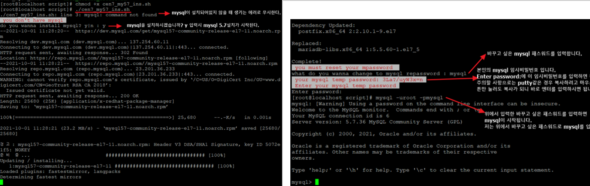

← Back to portfolio
Linux · Shell Script · MySQL
Infrastructure Automation with Shell Scripts
Automated database provisioning and secure initial configuration using shell scripts,
reducing manual setup time and improving deployment consistency.
Linux
Shell Script
MySQL
Automation

Overview
This project focuses on automating repetitive infrastructure setup tasks,
especially database installation and initial security configuration.
Instead of manually configuring each server, the entire process is handled
through reusable shell scripts.
What I Built
- Automated MySQL installation process on CentOS
- Handled initial root password extraction and reset
- Scripted secure setup steps (password policy, authentication)
- Reduced manual configuration steps significantly
Challenges & Solutions
-
Challenge: MySQL initial password handling was inconsistent
Solution: Parsed logs automatically to extract and reuse temp password
-
Challenge: Repeated manual setup caused errors
Solution: Fully scripted installation + configuration flow
-
Challenge: Ensuring security during automation
Solution: Included password reset and secure setup logic in script
Result
The project significantly reduced setup time and improved consistency
across environments. It also strengthened my understanding of Linux-based
automation and system-level scripting.